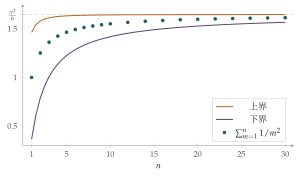

STEP III 2018，第 7 題
繼續之前，請先閱讀題目（原題為英文）。題目載於 STEP Support Programme 的題目資料庫： step.maths.org/questions/18-s3-q7
引子
1650 年，Pietro Mengoli 提出了一個簡單的問題： \[1 + \frac14 + \frac19 + \frac1{16} + \frac1{25} + \cdots\, ?\] 的值是甚麼？各項縮小得夠快，足以令這個和收斂（converge）（第 2.3 節 已證明它不超過 \(2\)），但沒有人能求出它的值。伯努利（Bernoulli）兄弟試過，卻無功而還；雅各布·伯努利（Jacob Bernoulli）更公開懇求他人相助。這個問題後來以伯努利兄弟的家鄉命名，稱為巴塞爾問題（Basel problem）。
1734 年，年輕的歐拉（Leonhard Euler）解決了這個問題，答案令他一舉成名：這個和等於 \(\pi^2/6\)。\(\pi\) 明明是一個關於圓的數，究竟為甚麼會出現在平方倒數之和裏？本題給出一個完整而嚴格的證明，所用的工具全部不超出高級程度（A-level）的範圍：棣美弗定理（De Moivre’s theorem）、多項式（polynomial）的根之和，以及夾逼（squeeze）。
動筆之前
在處理細節之前，值得先看看整體的計劃。
第 (i) 部分構造一個多項式，它的根就是 \(\cot^2\bigl(\frac{m\pi}{2n+1}\bigr)\) 這些數。
第 (ii) 部分利用係數（coefficient），在不知道各個根的情況下把這些根加起來。
第 (iii) 部分利用「當 \(\theta\) 很小時 \(\cot\theta \approx 1/\theta\)」這個事實，把 \(\cot^2\) 值之和變成 \(1/m^2\) 值之和，然後夾逼。
若多項式 \(a_n x^n + a_{n-1} x^{n-1} + \cdots + a_0\) 的根為 \(r_1, \ldots, r_n\)，那麼 \(r_1 + \cdots + r_n\) 以係數表示是甚麼？
答案是 \(-a_{n-1}/a_n\)。這個事實正是第 (ii) 部分的動力所在。
逐步解題
階段 1 棣美弗定理
把 \(\cot\theta + \mathrm{i}\) 寫成單一分數。你留意到分子有甚麼特別？
\(\cot\theta + \mathrm{i} = \dfrac{\cos\theta + \mathrm{i}\sin\theta}{\sin\theta}\)，同樣地 \(\cot\theta - \mathrm{i} = \dfrac{\cos\theta - \mathrm{i}\sin\theta}{\sin\theta}\)。根據棣美弗定理， \[(\cot\theta \pm \mathrm{i})^{2n+1} = \frac{\cos(2n+1)\theta \pm \mathrm{i}\sin(2n+1)\theta}{\sin^{2n+1}\theta}.\] 兩式相減，餘弦項互相抵消，正弦項則變成兩倍，再除以 \(2\mathrm{i}\) 便得 \[\frac{\sin(2n+1)\theta}{\sin^{2n+1}\theta}. \qed\]
階段 2 多項式
現在改用二項式定理（binomial theorem）展開左邊。設 \(c = \cot\theta\) 及 \(N = 2n + 1\)。
在 \((c + \mathrm{i})^N - (c - \mathrm{i})^N\) 中，兩個二項展開式有哪些項互相抵消，又有哪些項變成兩倍？
含 \(\mathrm{i}^j\) 的項在第一個展開式中帶 \(+\) 號，在第二個展開式中則帶 \((-1)^j\)。因此 \(j\) 為偶數的項互相抵消，\(j\) 為奇數的項變成兩倍： \[(c + \mathrm{i})^N - (c - \mathrm{i})^N = 2 \sum_{j \text{ 為奇數}} \binom{N}{j} c^{N-j}\, \mathrm{i}^j.\] 取 \(j = 2k + 1\)，則 \(\mathrm{i}^j = \mathrm{i}\,(-1)^k\) 及 \(c^{N-j} = c^{2n-2k} = (c^2)^{n-k}\)。除以 \(2\mathrm{i}\)，得 \[\frac{\sin(2n+1)\theta}{\sin^{2n+1}\theta} = \binom{2n+1}{1} x^n - \binom{2n+1}{3} x^{n-1} + \cdots + (-1)^n,\] 其中 \(x = \cot^2\theta\)。
左邊在哪些 \(\theta\) 的值時等於零？利用這一點找出多項式的 \(n\) 個不同的根。
當 \(\sin(2n+1)\theta = 0\) 而 \(\sin\theta \neq 0\) 時，左邊等於零，例如當 \(\theta = \frac{m\pi}{2n+1}\)，其中 \(m = 1, 2, \ldots, n\)。這些角全部嚴格介乎 \(0\) 與 \(\frac\pi2\) 之間，而 \(\cot\) 在這個範圍內為正且嚴格遞減，所以 \(\cot^2\bigl(\frac{m\pi}{2n+1}\bigr)\) 這 \(n\) 個值各不相同。\(n\) 次多項式最多有 \(n\) 個根，所以這些就是它的全部根。■
階段 3 把根加起來
根之和等於 \(-(\text{以下一項的係數：} x^{n-1}) / (\text{以下一項的係數：} x^n)\)： \[\sum_{m=1}^{n} \cot^2\left( \frac{m\pi}{2n+1} \right) = \frac{\binom{2n+1}{3}}{\binom{2n+1}{1}} = \frac{(2n+1)(2n)(2n-1)}{6\,(2n+1)} = \frac{n(2n-1)}{3}. \qed\] 以 \(n = 1\) 驗算：\(\cot^2(\pi/3) = \frac13\)，而 \(\frac{1 \times 1}{3} = \frac13\)。
階段 4 夾逼
由 \(0 < \sin\theta < \theta < \tan\theta\) 出發，取倒數（不等號方向因而倒轉）再平方： \[\cot^2\theta < \frac{1}{\theta^2} < \frac{1}{\sin^2\theta} = 1 + \cot^2\theta.\]
代入 \(\theta = \frac{m\pi}{2n+1}\)，並對 \(m = 1, \ldots, n\) 求和。外側的兩個和變成甚麼？中間的和與 \(\sum 1/m^2\) 有甚麼關係？
中間的和是 \(\displaystyle\sum_{m=1}^{n} \frac{(2n+1)^2}{m^2 \pi^2}\)。根據第 (ii) 部分，左邊的和是 \(\frac{n(2n-1)}{3}\)，而右邊的和是 \(n + \frac{n(2n-1)}{3} = \frac{2n(n+1)}{3}\)。各項同乘以 \(\frac{\pi^2}{(2n+1)^2}\)： \[\frac{\pi^2}{3} \cdot \frac{n(2n-1)}{(2n+1)^2} \;<\; \sum_{m=1}^{n} \frac{1}{m^2} \;<\; \frac{\pi^2}{3} \cdot \frac{2n(n+1)}{(2n+1)^2}.\] 當 \(n \to \infty\) 時，\(\frac{n(2n-1)}{(2n+1)^2}\) 和 \(\frac{2n(n+1)}{(2n+1)^2}\) 都趨向 \(\frac24 = \frac12\)（把分子和分母同除以 \(n^2\)）。所以上下兩個界都趨向 \(\frac{\pi^2}{6}\)，而部分和（partial sum）被夾在兩者之間，亦必定趨向 \(\frac{\pi^2}{6}\)（圖 2.4.1）。■

回顧
從係數取得資訊。我們始終沒有把 \(\cot^2(m\pi/(2n+1))\) 這些根化成任何更簡單的形式，卻準確地求出了它們的和。
先近似，再夾逼。\(\cot\theta\) 只是近似等於 \(1/\theta\)，但誤差在兩個方向上都受到精確的不等式控制。
由有限到無限。除了最後一步，每一步處理的都是有限和。無窮和只在我們於不等式中令 \(n \to \infty\) 時才出現，這正是處理無限的穩妥方法。
背後的數學
以現代標準來看，歐拉本人在 1734 年的論證並不嚴格，卻令人目眩神迷。一個多項式若以 \(\pm a, \pm b, \pm c, \ldots\) 為根，且在 \(0\) 處取值 \(1\)，便可分解為 \((1 - x^2/a^2)(1 - x^2/b^2)\cdots\)。函數 \(\frac{\sin x}{x}\) 在 \(0\) 處取值 \(1\)，而它的根是 \(\pm\pi, \pm 2\pi, \pm 3\pi, \ldots\)，於是歐拉把它當作一個「無限多項式」，寫下 \[\frac{\sin x}{x} = \left(1 - \frac{x^2}{\pi^2}\right)\left(1 - \frac{x^2}{4\pi^2}\right)\left(1 - \frac{x^2}{9\pi^2}\right)\cdots.\] 右邊 \(x^2\) 的係數是 \(-\frac{1}{\pi^2}\bigl(1 + \frac14 + \frac19 + \cdots\bigr)\)，而由麥克勞林級數（Maclaurin series）\(\frac{\sin x}{x} = 1 - \frac{x^2}{6} + \cdots\) 可知它是 \(-\frac16\)。兩相比較便得 \(\pi^2/6\)。我們這個 STEP 證明正是同一想法的有限而嚴格的版本：一個多項式，它的根與 \(\pi\) 的倍數息息相關，再加上它的第二個係數。
平方倒數以外
歐拉其後還求出 \(\sum 1/m^4 = \pi^4/90\)、\(\sum 1/m^6 = \pi^6/945\)，而一般而言 \(\sum 1/m^{2k}\) 是 \(\pi^{2k}\) 的有理數倍，當中涉及伯努利數（Bernoulli numbers）。奇數次冪則是另一回事：正如我們在 第 2.3 節 所見，沒有人知道 \(\sum 1/m^3\) 的公式。這些和就是黎曼 ζ 函數（Riemann zeta function）的值 \(\zeta(2), \zeta(4), \ldots\)，而這個函數在複數自變量上的表現，支配着質數的分佈（第 1.2 節）。
日後在哪裏再遇上
在大學裏，你會至少再遇到 \(\zeta(2) = \pi^2/6\) 的三個證明：一個來自傅立葉級數（Fourier series）（把函數寫成正弦和餘弦之和），一個來自二重積分（double integral），還有一個來自複分析（complex analysis）。這個數也在概率中出現：隨機選出的兩個整數沒有公因數的機會是 \(6/\pi^2 \approx 0.61\)。（質數 \(p\) 同時整除兩者的概率是 \(1/p^2\)，所以沒有任何質數同時整除兩者的機會是 \(\prod_p (1 - 1/p^2)\)，而歐拉證明了這個乘積等於 \(1/\zeta(2)\)。）\(\pi\) 在概率極限中的另一次現身，是 第 12.23 節 的主題。
思維技巧
要求一個極限，可把該量夾在兩個極限相同而較簡單的式子之間。
而當你需要求一些難纏的數之和（或積）時，不妨試找一個以它們為根的多項式：係數會把這些數的對稱組合白白送給你。
延伸練習
1992 年的版本。試做 STEP III 1992，第 8 題。它利用一個與本節相似的多項式，求出正切平方與餘割平方的準確和。（提示：若你知道一個多項式的根是 \(r_i\)，那麼哪個多項式的根是 \(1/r_i\)？）
奇數的平方。由 \(\sum 1/m^2 = \pi^2/6\) 推導出 \(1 + \frac19 + \frac1{25} + \frac1{49} + \cdots = \frac{\pi^2}{8}\)。
四次方。 較難 利用 \(\sum r_i^2 = (\sum r_i)^2 - 2\sum_{i<j} r_i r_j\) 和多項式的係數，求 \(\sum_{m=1}^{n} \cot^4\bigl(\frac{m\pi}{2n+1}\bigr)\)，並改動夾逼的論證以證明 \(\sum 1/m^4 = \pi^4/90\)。
有多快？利用第 (iii) 部分的下界，證明 \(\frac{\pi^2}{6} - \sum_{m=1}^{n} \frac{1}{m^2} < \frac{\pi^2}{4n}\)。按這個結果，\(n\) 要多大才能保證部分和與 \(\pi^2/6\) 相差不超過 \(0.001\)？試與真正的誤差比較，後者接近 \(1/n\)。
延伸閱讀
William Dunham, Euler: The Master of Us All（Mathematical Association of America）。第 3 章講述巴塞爾問題的故事，並完整交代當中的數學。
Aigner & Ziegler, Proofs from THE BOOK，第 9 章「Three times \(\pi^2/6\)」。當中包括本節的證明。
Paul Nahin, Dr. Euler’s Fabulous Formula（Princeton University Press）。內容涵蓋複數、傅立葉級數，以及類似本節的求和。